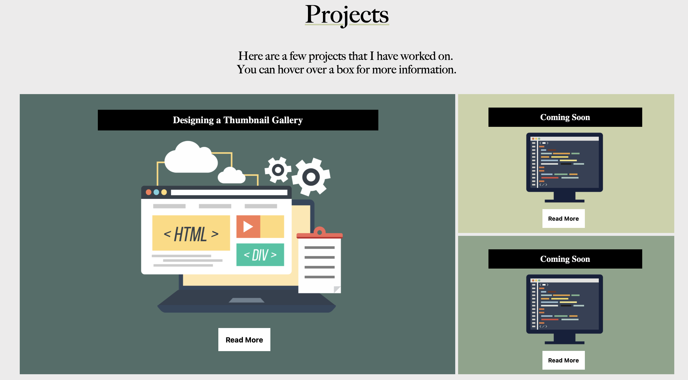
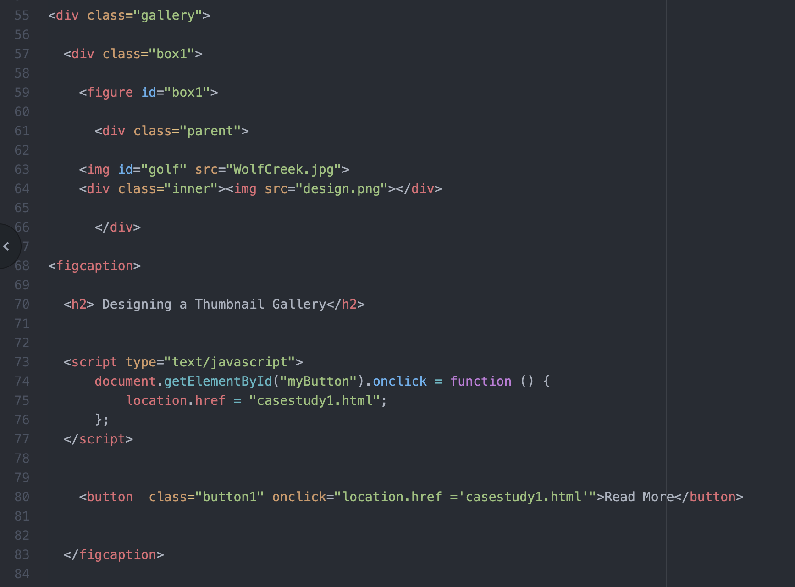

Daniel Hayward
Golfer & UX Designer

Creating my Professional Portfolio was the first coding project I had ever worked on. I was first required to make one as a sophomore for another class, and rather than use the same portfolio, I wanted to make an updated website.

My main priority when making the new website was to have a more visually appealing Case Study Gallery. The previous gallery was functional, but it did not look all that great. For the new website, I wanted an animated gallery that used CSS grids.

Coding the new Gallery was actually much easier than I originally thought it would be. I started by creating a Div for the gallery itself, then I included three figures inside the gallery, which are the thumbnails. I then set up my grid using the line technique on CSS. After I defined the figures, I added images, captions, and hovering effects. Before you hover over a thumbnail, you see the title and image, once you hover over the image, it zooms in and a "Read More" button appears.
Recreating my Professional Portfolio has taught me a lot about the coding process. I have a much greater understanding of why style tiles, wireframing, and feedback are important. Focusing on one specific part of my website to improve helped me see what I did well in my previous attempt, and I could do better the second time around. Furthermore, while researching CSS grids and hover, I discovered many other elements I had never used that will be beneficial for me in the future.` `